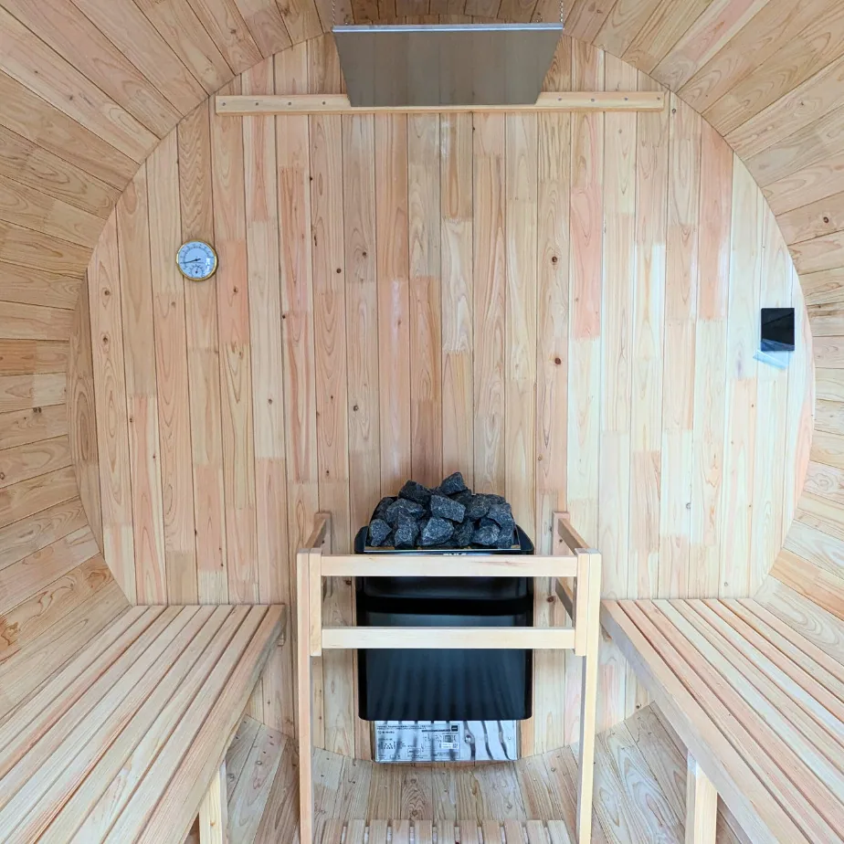

「ちょっとした遊び心がある施設になったのかなと。」
穏やかな口調でそう語るのは、瀬戸内海を一望するリゾートホテルのご担当者、鎌田様。
青い空と海に溶け込むように佇む、2台の国産ヒノキ・バレルサウナ。それは単なる設備更新ではなく、ホテルの未来を見据えた、現場の想いが込められた選択でした。
この記事では、鎌田様の言葉と共に、バレルサウナ導入の物語をご紹介します。なぜ「2台同時導入」だったのか、その選択の理由、そして導入後に生まれた、ビジネスにおける確かな変化とは。
| 導入者 | 瀬戸内リゾートホテル様 |
| 設置場所 | レストラン2階の屋上スペース |
| 導入モデル | i–barrel Medium R245（4〜6名用）2台 |
| お話を伺った方 | ご担当者 鎌田様 |

なぜバレルサウナだったのか？ 施設が向き合った課題と、その答え
「サウナを入れよう」という考えの背景には、施設が向き合っていた3つの現実的な課題がありました。
課題①：「36室」の規模に見合うサウナの提供
「もともと、36室の半分くらいはサウナ付きのホテルだったんです。ただ、経年劣化で使えなくなってしまって…」
お客様にサウナ体験を提供することは、このホテルにとって大切な付加価値でした。しかし、施設の規模を考えると、一度に少人数しか利用できない設備では十分ではありません。「1台だけだとね、客室が36あるんで、ちょっと対応しづらい」。多くのお客様に、快適なサウナを楽しんでいただくためのキャパシティ確保が最初の課題でした。
課題②：「デイユース」の魅力を高める一手
日帰り利用の価値向上も大きなテーマでした。
「デイユースという作りの使い方であれば、部屋を借りていただくことによってそのサウナも1日使えますよ、という見込みがしたかった」
サウナという体験価値を付加することで、宿泊以外の新たな顧客層にアプローチし、施設の利用価値を高めたいという狙いがありました。
課題③：長期運用を見据えた「品質」へのこだわり
海外製品も選択肢に上がる中、鎌田様は品質と安心感を重視していました。
「他のところは輸入貿易業者だったんで、トラブルなんかも報告があったり。やっぱり国産で宮崎のヒノキを使っているところは導入しやすい点でしたよね」
お客様に長期にわたって安心して利用してもらうこと。その考えから、サウナの素材は「国産ヒノキ」であることを条件に検討を進めました。

このサウナが選ばれた「決め手」
i-barrelは、鎌田様が抱えていた課題を解決する条件を満たすものでした。
・「国産ヒノキ」という品質への信頼
日本の気候で育ち、日本の職人が手掛ける国産ヒノキの品質。それが、お客様への安心に繋がるという考えがありました。
・「2台設置」によるキャパシティと景観の両立
「やっぱりバレルサウナは解放感があっていいですよ。外なんで。で、2個あるから我々で（我ながら）解放感ありますね」
36室のお客様に対応できるキャパシティを確保すると同時に、2台が並ぶ景観は、施設の新たなシンボルとしても存在感を放っています。その見栄えの良さは、ホテルの広告写真としても活用されるほどです。
・約30分で温まる、運営に適した性能
「30分ぐらいしたらすぐ温かくなりますし、特に（問題は）ないです」
お客様を待たせることのないスピーディーな立ち上がりは、ホテル運営の効率を考える上で重要なポイントでした。

導入後の変化：ホテルにもたらされた確かな手応え
バレルサウナは、ホテルの日常に新たな変化をもたらしました。。
リゾート体験の質の向上
「お客様から『ホテルにサウナがあると、やっぱりリゾート感が増すよね』という声は聞こえますよね」
瀬戸内海を見下ろす青空の下でととのう時間は、宿泊体験そのものの価値を一層高めることになりました。それは、これまでとは違う、新たな体験価値の提供に繋がっています。
新たな収益機会と、「遊び心」という価値
サウナは、新たなビジネス機会も生み出す可能性も秘めています。
・日帰り利用: 1時間 1,650円/人（税込）
・デイユース（貸切）: サウナ付き客室プランとして 8,000円～10,000円
さらに、バーベキューとサウナを組み合わせるなど、サービスの可能性は広がります。
「サービスの幅は広がりますね。…ちょっとした遊び心がある施設にはなったのかなと」
それは、単なる売上増に留まらない、ホテルがお客様にとって「より楽しく、魅力的な場所」へと変化している手応えを感じる瞬間でした。
まとめ：施設の価値を、もう一歩先へ
最後に、導入を検討されている他の施設ご担当者の方にとって、参考になるであろう言葉をご紹介します。
最後に、導入を検討されている他の施設ご担当者の方にとって、参考になるであろう言葉をご紹介します。
鎌田様は、そう静かに語ります。この言葉は、実際に約1年間運用してきた経験からくる、製品に対する率直な評価と満足感の表れと言えるでしょう。
鎌田様の事例は、バレルサウナが単なる人気設備ではなく、施設の課題解決に繋がり、新たな価値や収益機会を生み出すための、有効な選択肢となり得ることを示しています。
それは、効率や数字だけでは測れない「遊び心」という魅力を施設に加え、訪れる人々の体験をより豊かなものにする。
施設の可能性を広げる次の一手を考える上で、この物語がヒントになれば幸いです。
国産桧バレルサウナにご興味のある方は、お問い合わせフォームから。